Note:
python3 main.py -q 1.1
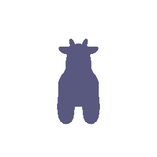
python3 main.py -q 1.2
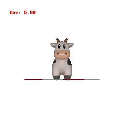
python3 main.py -q 2.1
python3 main.py -q 2.2
python3 main.py -q 3
color1 = [0, 0.6, 0.6] and color2 = [0.8, 0, 0.4].python3 main.py -q 4
| Transform | Intuition |
|---|---|
| Flipped | R_relative is such that the axes are rotated about the z-axis. The matrix is created by understanding what the new axes would be oriented towards after rotation. The cow model needs to be rotated by 90 in clockwise. Thus, the camera is rotated by 90 counter-clockwise. Since the rotation is about the z axis, there's no need to change the position of the camera. So, T_relative would be all 0s. |
| Moved Away | The cow seems further away. This is done by moving the camera away. Thus, a further translation (T_relative) of 2 is added on top of the original 3. Thus, the camera is now at (0, 0, -5). |
| Shifted | The cow moves towards left and a bit upwards with respect to the camera as compared to the original. Thus, the camera is moved in the opposite manner - right (+ve x-axis) and down (-ve y axis). |
| Side-view | The cow is rotated by 90 clockwise about the positive y axis. Thus, the camera is first rotated 90 clounter-clockwise about y axis. Now along the rotated axes, the camera needs to be moved in its -ve x axis to reach the world fram origin and then along its +ve z axis to get the sideview. |
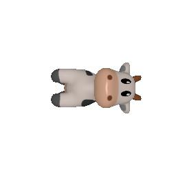
 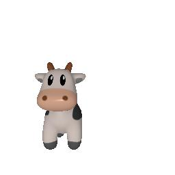
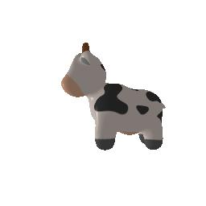
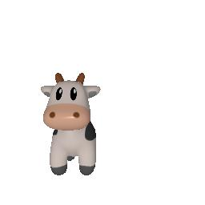
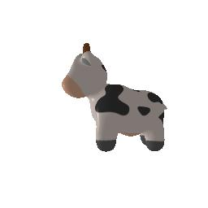
python3 main.py -q 5.1
| Plant1 | Plant2 | Plant_union |
|---|---|---|
 |
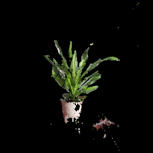 | 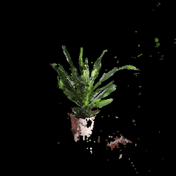 |
python3 main.py -q 5.2 -n 100
| Torus 100 | Torus 1000 |
|---|---|
 |
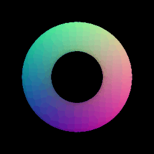 |
python3 main.py -q 5.3

As per the rendering experience, meshes are easier and faster to render while retaining most of the 3d representational information. For a higher number of sampled points, the point cloud and mesh representations both have similar quality. However, mesh is able to render better at a faster speed and so, is more convenient to use.
python3 main.py -q 6
UFO and an Alien
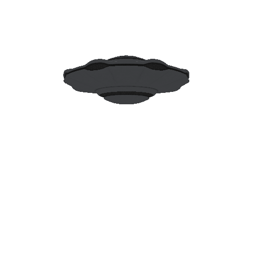
I have used models of an alien and a UFO. I was able to align and make these camera facing by using different rotation matrices. Also, to get the intended motion, I had to play around with the translation matrices.
python3 main.py -q 7 -n 10000
10 points sampled

100 points sampled
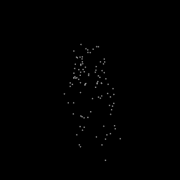
1000 points sampled

10000 points sampled